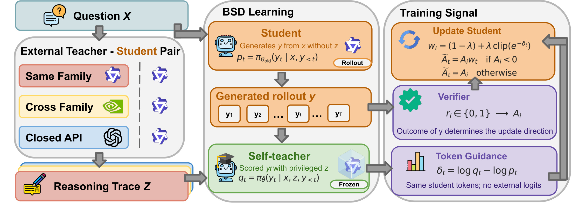
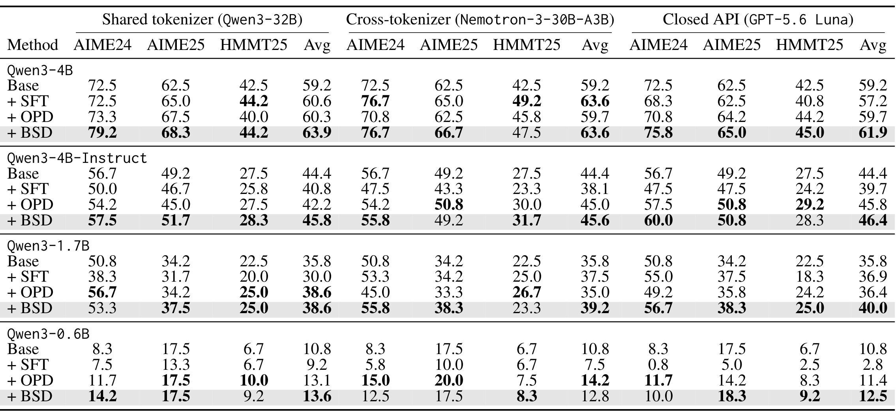
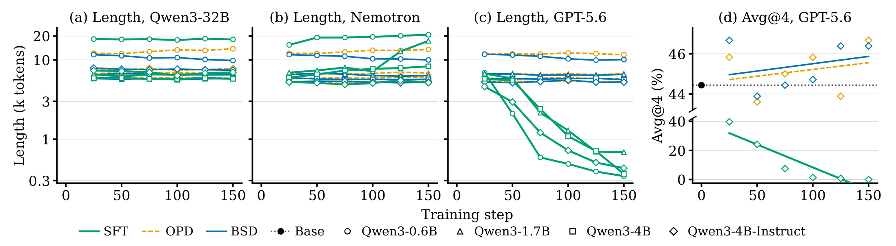
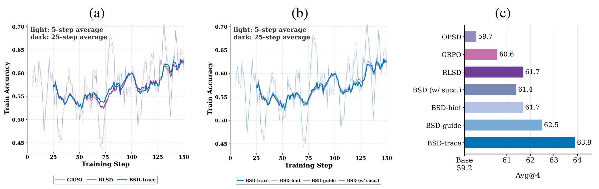
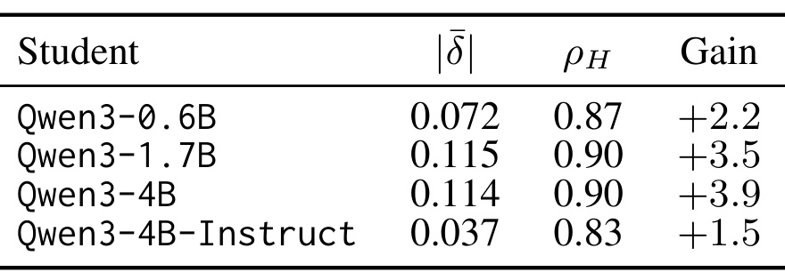
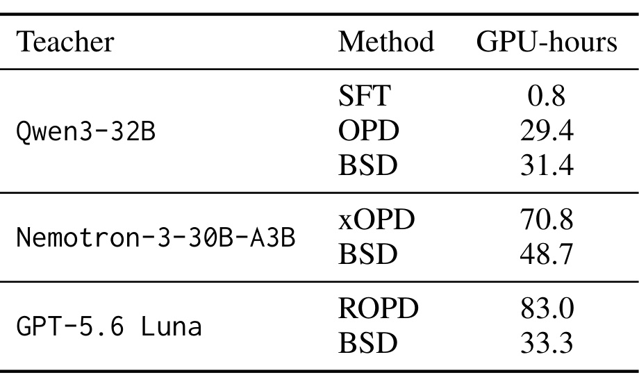

Bridged Self-Distillation：把外部推理文本桥接为学生的失败惩罚
论文：Bridged Self-Distillation for On-Policy Learning；作者 Runsheng Chen、Yihong Liu 等。第一作者机构为慕尼黑工业大学，合作机构包括 LMU Munich 与 MCML。arXiv v1 于2026-10-19发布，阅读核验日为2026-10-21。论文入口。以下按论文报告，尚未独立复现。
更强教师的解题过程可能难以被较小学生模仿，而教师的词元级概率又可能与学生不兼容，甚至完全无法取得。
1. 背景和问题
论文希望让小型推理模型吸收大模型的数学解题能力，困难却不只在于教师是否答对。容量有限的学生需要在自己的生成路径上得到有用信号；完整复述教师的长推理时，教师采用的分解方式、表述习惯、隐含知识和学生当前策略可能相距很远。教师越强不自动意味着模仿目标越合适，教师输出越短也不代表学生应该删除自己的中间推理。
监督微调把教师文本作为目标序列，提高每个教师词元的生成概率。它只需要文本，接入方便，但训练分布主要由教师决定。学生推理时生成自己的前缀，一旦进入教师正确示范没有覆盖的错误路径，单纯模仿正确答案未必知道如何纠偏。在线策略蒸馏让学生先生成轨迹，再由强教师对学生词元评分，监督发生在学生实际访问的状态上，不过同时要求教师提供下一个词元概率，还要能解释学生使用的词元。知识转移更贴近学生行为，访问条件却变得更严格。
共享分词器最容易处理，同一词元概率具有明确对应，但模型规模、推理模式与概率校准仍可能不同。跨模型家族时，同一字符串可被切成完全不同的片段，位置不再逐个对应。跨分词器蒸馏必须建立映射，映射误差进入训练信号。封闭接口则可能只返回文本，不公开词表和完整概率，常规分布匹配连输入都不可得。基于评分准则的方法让教师写规则、再给学生轨迹评分，但需要不同监督流程及持续外部调用。作者想让同一训练链路覆盖这三类访问条件。
BSD 将知识来源与词元评分来源分开。外部强教师为问题提供解题文本，文本只在训练时传给学生副本；副本读过文本后，给学生原先生成的同一条轨迹评分。副本与学生同结构、同词表，不需要把外部教师词表映射到学生。这里得到的概率不是对外部原始分布的精确重建，而是学生获得额外解题信息后对自己词元选择的重新评估。它可被理解为通过特权上下文改善信用分配，但不能声称恢复了黑盒教师全部知识。
副本仍然不是可靠真理源。即使读过正确推理，它也可能支持错误词元，或无法理解复杂步骤。论文因此保留最终答案验证器，不让概率差决定奖励正负。验证器判断整条轨迹对错，概率差只调整失败轨迹里不同词元的惩罚强度。成功轨迹继续按照原有强化学习信号学习，避免教师风格差异压制学生自主找到的正确解。这一职责划分区别于纯自蒸馏，也限定了应用必须具有足够可靠的结果验证机制。
数学竞赛为本文提供明确最终答案，能够自动验证。它是一种带可验证奖励的后训练方法，不是无需标签和反馈的通用压缩。外部文本如果错误、无关，或学生读不懂，同词表只消除了接口障碍，不保证语义指导有效。错误概率被限制在小幅惩罚变化中，风险得到缓冲，但并没有消失。学习信号的来源与可信性必须分别检查，不能因为教师能力强就省略验证器。
另一个边界是组内相对优势。学生对同一问题采多条轨迹，成功与失败混合时形成正负差异；全失败组没有相对优势，副本指导再丰富也无法凭空生成更新。对于弱学生和过难题，这个瓶颈尤其突出。论文在六亿至四十亿学生上取得平均提升，并不意味着任意更弱模型都能靠相同训练启动。全成功组同样没有差异，不继续贡献组相对梯度。因此监督来源统一与样本学习效率提升也不是同一主张。
对推荐与搜索工程，借鉴点可能是把强模型提供的文本知识，经较小同构模型转成局部训练指导。可验证查询生成、结构化工具调用、约束满足等子任务更接近本文条件。点击、停留等行为反馈则受曝光和用户意图影响，未点击并非确定失败；直接套用负轨迹权重可能放大观测偏差。原文没有推荐系统实验，这里只能讨论训练信号结构，不能推断线上收益。
本文阅读时需要区分四件事：统一接口是否可运行、特权文本是否提供增量指导、相对特定基线是否更强，以及整体成本是否更低。十二组数学实验最直接支持前两项和多数配对的平均性能优势；训练预算不完全一致，计算表又排除部分外部成本，后两项存在条件。后续依次检查主结果、消融、指导统计、成本和多次采样覆盖率，才能避免把一项清晰的设计价值夸大成普遍支配所有蒸馏方案。
还应区分两种分布差异。教师与学生容量不同会产生能力差异，即使输入输出格式一致，教师给出的推理也可能跨越学生尚未掌握的步骤；训练轨迹与学生部署轨迹不同则产生状态访问差异，即使教师输出足够简单，学生实际生成时也可能偏离示范。监督微调主要提供教师正确路径，在线蒸馏主要照顾学生访问状态，BSD 则尝试让教师知识通过学生自己的判断进入这些状态。两个障碍没有被完全消除，只是分别得到一套缓冲机制。因此它的有效性不能由接口兼容性单独推导，必须有下游题目上的增量成绩。
本文的“任意教师”也应按访问条件理解。只要能返回文本，方法形式上就能接入，但如果文本仅有最终数值、几乎不含推导，副本能获得的额外信息会非常有限；若题目本身需要无法验证的价值判断，结果方向更无从可靠确定。将访问统一说成能力无条件迁移，会掩盖文本内容与验证器这两项基本依赖。读者采用此结构时，应先界定何种外部内容实际可获得，再判断其能否帮助学生，而不是先选一个强教师就默认监督一定充分。
2. 方法
2.1 外部教师：文本作为特权上下文
输入是问题，外部教师为每题返回一次文本，开放模型可提供完整推理，封闭接口隐藏内部推理时只能用实际返回响应。实验中开放教师文本平均约四千词元，封闭教师约二百四十七词元。文本在训练前离线生成，训练期间不要求外部教师概率或持续调用。附录将闭源响应中公开返回的推导包进推理块，再把最终答案置于块后，只是适配学生格式，没有拿到被隐藏的内部思维链。此阶段输出上下文给副本评分，学生采样时看不到它，服务推理也不需要它。
教师文本是辅助信息，而不是学生必须复述的目标序列。这避免直接训练学生模仿短响应，也使跨分词器教师不必提供词表映射。学生问题上限二千零四十八词元，自教师问题与轨迹输入上限一万二千二百八十八，最长实际组合八千九百五十，本文没有截断。现实长轨迹若超限，如何裁剪会改变指导质量，统一接入不能消除上下文预算约束。教师信息质量和学生理解能力仍然决定文本能否发挥作用。
2.2 自教师：同词表的条件概率差
学生独立生成轨迹，自教师是冻结副本，使用问题、额外文本及相同轨迹前缀，为已采样词元评分。这个评分过程不是让副本接着教师答案续写，而是固定学生已有输出，再改变条件输入进行比较；因此分子分母对应的是同一个实际选择，避免跨模型词元位置无法逐一匹配的问题，也保留学生偏离教师示范的前缀：
符号解释：$x$ 是问题，$z$ 是外部文本，$y_t$ 为当前词元，$y_{<t}$ 为轨迹前缀，$\theta$ 为学生参数，$\bar\theta$ 为副本参数，$p_t,q_t$ 为同一词元两种条件概率。附录规定学生评分使用当前训练概率，生成与训练策略间差异由截断重要性采样修正；不能只按图中旧策略下标替代当前评分。
符号解释：$\delta_t$ 是指导信号，$\operatorname{sg}$ 为停止梯度。正值代表副本更支持当前词元，负值代表读过解题文本后支持下降，但不等价于步骤对错标签。副本每十次学生更新同步一次，同步之间冻结；因此不是训练开始复制后永久不变。停止梯度防止学生通过改变指导权重获得额外旁路梯度，与冻结副本各自承担不同控制作用。

Figure 2 把三类信息通道分开。左侧三种外部教师虽然访问形式不同，进入训练器的都是解题文本。中间上方学生只拿问题生成，下方副本拿问题和文本评分，两个分支处理相同的学生输出；副本没有另外生成标准答案，也没有要求外部教师逐个检查学生词元。右侧验证器先确定轨迹级优势，概率差再分配失败词元的惩罚强度，最后更新学生。这解释了无需外部概率的原因，也说明副本不能代替验证器：它只是学生获得额外信息后的判断，可能在局部继续出错。冰冻标志表示评分时参数固定，实际附录每十步同步，需要在训练器显式实现。训练结束只保留学生生成分支，所以服务时没有教师调用；但训练增加一次携带长上下文的前向，不能理解为免费监督。三个教师图标统一到文本入口，也不表示三类文本含有相同信息，开放教师的长推理与封闭教师的短响应仍须分别评估。框图没有提供可靠的首次错误定位，验证器只知道最终答案，而局部概率差沿整条失败轨迹分布；它是在重新分配负更新，不是在提供真实步骤标签。若文本误导副本，限幅只能缓和影响。成功轨迹上的学生自发正确路径则被保留下来，体现本文把辅助模型权限限制在局部幅度调整中的设计选择。图中的信息箭头还表明教师文本没有直接流向学生的生成输入，它进入学生更新只能经过副本评分与优势调制。因此复现必须保证采样提示与评分提示分开，不能为了实现方便把教师轨迹拼到学生问题后再生成，否则就改变了在线策略分布，也失去训练期特权信息在部署时可移除的含义。
2.3 学习：仅失败轨迹重加权
同题采样组的二值奖励经过归一化。这里分组依据是同一个问题，不能把不同题目的轨迹混成一个奖励组；否则优势会比较难度不同的问题，改变论文采用的局部相对反馈含义。验证器只提供终点反馈，不提供过程步骤标签；归一化把这个终点反馈转换成一组相对信号，但仍然不能判断某个失败词元是否本身正确，这才需要下面的辅助权重：
符号解释：$G$ 是轨迹数，$r^{(i)}$ 是零或一奖励，$A^{(i)}$ 是组内优势。同组既有成功又有失败时分别产生正负优势；全失败或全成功组按论文约定为零，实际实现需保护零标准差。特权上下文不会改变这些组没有梯度的性质。
预备知识的 RLSD 使用按优势方向变换的概率比。它先比较有无特权上下文的同词元概率，再根据轨迹优势符号决定比值方向；正优势与负优势的处理并不相同，这也是阅读 BSD 负指数时需要保留的比较背景：
符号解释：$u_t$ 是按优势正负调整的概率比，$\lambda$ 为强度，$\epsilon$ 为剪裁半径，$\widehat A_t^{\mathrm{RLSD}}$ 为该比较方法词元优势。BSD 还改变了上下文来源，并限定只对失败轨迹使用权重，不能把两种算法混为一谈。
符号解释：$w_t$ 为失败词元权重，指数使用负指导信号。副本更反对词元时 $\delta_t<0$，权重大于一，惩罚更强；更支持时惩罚减弱。初始 $\lambda=0.5$、$\epsilon=0.2$，所以混合后权重区间为零点九至一点一，零点八至一点二是混合前剪裁范围。强度线性退火到零，后期逐渐回到普通强化学习。
符号解释：$\widetilde A_t$ 是最终词元优势，$A$ 是原始轨迹优势。正权重不会把惩罚翻成奖励；失败轨迹中的合理词元只是少罚，成功轨迹原样强化。这个保护设计允许学生保留不同于教师但能答对的路径。
符号解释：$J$ 是正文说明机制的最大化目标，期望覆盖问题与学生轨迹。实现采用词元均值聚合、截断重要性采样，以及下界零点二、上界零点二八的策略概率比剪裁，无额外 KL 惩罚或熵正则。策略剪裁与前面指导权重剪裁不同。附录一阶展开把失败更新解释为强化学习加在线蒸馏式修正，只是局部近似，不是有限剪裁下无条件严格等价。
在符号方向上可以用一个简单数值检查理解：假设失败轨迹某个词元副本支持度下降，那么对数概率差为负，取负后指数上升，乘到负优势上会使其更负。若漏掉指数里的负号，就会把副本认为更可疑的词元少罚，直接反转设计意图。另一个常见错误是把较合理失败词元的负优势变成正优势；本文权重始终为正，这种翻转不可能发生。读者实现时还应区分轨迹最终失败与组优势负值，两者只在混合结果组里对应，全失败组的最终结果也是错误但优势为零，不应套入负优势分支制造论文之外的梯度。
附录中的一阶解释尤其适合定位算法关系，而不适合替代实际更新。小指导差附近，指数可以近似线性展开，于是原始负优势之外出现与概率差相关的修正，像是在学生轨迹上做局部蒸馏。可是权重饱和后、同步副本偏离当前参数后，或者策略剪裁启动时，近似可能不再准确。副本的特权条件还包含教师文本，而普通在线蒸馏直接使用外部模型，两者评分语义并不相同。这些差别解释了为什么数学上的局部相似不能代替消融和真实训练比较。
3. 实验结果
3.1 数据和评估边界
四个学生是 Qwen3-0.6B、1.7B、4B 和 4B-Instruct，最后一个先用一千条 Nemotron 样本学习推理块格式，因此基础分数并非发布版原始能力。三个教师分别是共享分词器 Qwen3-32B、异分词器 Nemotron-3-30B-A3B、文本接口 GPT-5.6 Luna。每个教师学生组合抽取二千四百个 OpenThoughts 数学题，各方法在组合内使用相同训练问题，监督微调和 BSD 共享教师文本。训练一百五十次更新，使用低秩适配器，秩三十二、缩放六十四，前十步学习率预热。
三个基准 AIME24、AIME25、HMMT25 各三十题，每题采四条回答，Avg@4 是四条回答的平均正确率，跨基准再平均。Pass@4 才是至少一次答对的题目比例，两者不能互换。开发集一百二十八题独立选检查点，同分用最早时刻；测试温度一点零，最大生成三万二千七百六十八词元。总共九十题的评估规模较小，四次采样不等于四倍独立题目，因此几个百分点增益仍需扩大评估和重复训练验证。
3.2 十二组配对主结果

Table 1 按三种教师访问条件分列，每组有三个数学基准及平均分；按四种学生分行，每种学生比较基础、监督微调、相应在线蒸馏和 BSD。此处 OPD 是表内共享缩写，实际分别对应普通 OPD、跨分词器 xOPD、基于准则的 ROPD，并非一个算法重复运行。BSD 十二组均优于基础，平均提升一点二至四点七个百分点，十一组最好或并列最好。例外是最小学生配异分词器教师，xOPD 十四点二高于 BSD 十二点八。四十亿学生异分词器情况下，BSD 与监督微调都是六十三点六，也不是严格独占优势。单基准仍有别的方法领先，所以统一框架有效应理解为整体成绩与稳定性，不能宣称每个模型每种题型都取胜。容量带来的差异也远大于若干算法间差异，骨干能力仍是重要变量。表内粗体按同教师同学生条件比较蒸馏方法，而不是跨整个表挑最高值；基础行在三组重复，是为了显示同一个起点。比较平均列时还应检查单基准取舍，尤其不要将某列的相对优势误写成所有列一致改善。
共享分词器教师下，四十亿学生基础五十九点二，监督微调六十点六，普通在线蒸馏六十点三，BSD 六十三点九，比基础高四点七，比普通蒸馏高三点六。十七亿学生 BSD 和普通蒸馏同为三十八点六，额外收益不是每个容量都存在。四十亿 Instruct 从四十四点四升到四十五点八，监督微调却降为四十点八。这说明同家族同词表也不能保证模仿教师推理最合适，学生路径上的指导可能更兼容，不过副本同构优势与具体优化设置仍有耦合。
异分词器下，四十亿 BSD 六十三点六、xOPD 五十九点七；十七亿 BSD 三十九点二，相比基础三十五点八提升三点四，而 xOPD 只有三十五点零。六亿学生却相反，xOPD 十四点二、BSD 十二点八。一个可能解释是极弱学生尚不足以充分理解文本，直接映射教师概率更有帮助，但原文没有专门干预这一因素，不能将它写成已证实原因。Instruct 的差异只有四十五点六对四十五点零，也应以小幅提升表述。
封闭教师下，四十亿 BSD 六十一点九，ROPD 五十九点七，监督微调五十七点二；十七亿 BSD 四十点零，比 ROPD 三十六点四高三点六；六亿 BSD 十二点五，比 ROPD 十一点四高一点一，而监督微调仅二点八。短教师响应直接作为监督目标可能损害学生的长推理习惯，BSD 则让副本利用短文本、学生维持自己的生成过程。教师自身平均成绩为八十七点二，另外两教师为六十九点二和六十八点六，却不意味着封闭教师能令每个学生获得最大收益。教师能力、公开信息深度和学生利用信息的能力共同影响转移效果。
3.3 训练稳定性和组件消融

Figure 3 前三栏分别展示不同教师下学生输出长度，颜色区分算法、形状区分容量。长度轴并非普通均匀线性刻度，读图时不能按几何间距比较相同词元变化。共享分词器教师下大部分方法稳定，异分词器教师下监督微调可能拉长输出，封闭教师短响应则让所有监督微调学生显著缩短。第四栏固定 Instruct 学生与封闭教师，监督微调平均正确率最后接近零，BSD 与 ROPD 维持或缓慢改善。它支持将文本作为辅助上下文以保留输出形式，不过长度与退化是伴随关系，未证明一切退化都仅由长度造成。主表按开发集选优，并非都取最后时刻，因此不能用终点近零替代主表监督微调成绩。模型选优规则本身也是实验结论的一部分。右侧准确率轴存在断点，底部低分区域与顶部四十四至四十六附近的变化比例不同。曲线形状更适合识别崩溃与稳定两类现象，精确改变量仍应查主表；相同颜色在不同面板的基线含义也随教师访问条件变化。

Figure 4 固定四十亿学生和共享分词器教师，比较无特权信息、答案、短提示、步骤指南和完整推理。训练题正确率曲线很接近，但测试平均从基础五十九点二、GRPO 六十点六、答案条件 RLSD 六十一点七，升到完整轨迹六十三点九；三句话提示六十一点七，不含计算的至多八步指南六十二点五。更完整信息主要改善泛化，而不明显改变训练准确率。同样权重也用于成功轨迹时只有六十一点四，低于仅失败重加权；去掉验证器的纯自蒸馏 OPSD 为五十九点七。这是最直接的组件证据，表明结果验证与保护学生成功路径都有贡献。但只在这一组教师骨干展开，不能断言其他任务的最优策略必然相同。文本质量、长度和具体推理内容也没有被完全正交分离。消融中的答案条件提供标准答案，提示与步骤指南也带答案，因此比较并非有无最终答案，而是最终答案之外的解题信息深度。完整轨迹优于这些简化上下文，才构成额外过程信息有价值的证据。
OPSD 补充实验从第二十五步六十三点三降到第一百五十步五十五点八，输出由一万六千八百缩到一万二千五百词元。这说明特权信息导致的概率差不应无条件追随。BSD 将它限制为局部惩罚调制，并让权重退火，训练后段逐渐恢复普通强化学习；但论文没有全面扫描退火速度、同步间隔或限幅，因此这些具体设置不能被当作普适最佳配置。成功轨迹重加权导致退化，支持本文保护机制，却还不能判断退化来自何种词元类型，仍需更细信用分配分析。
3.4 指导统计、效率和反证

Table 2 在训练前的失败轨迹上测指导，每个学生使用共同二十四道难题、每题六条轨迹，再对三个教师平均。第一项是有符号指导均值的绝对值，不是逐词元绝对指导的均值。四个学生前者分别零点零七二、零点一一五、零点一一四、零点零三七，附录后者零点一六三、零点一九一、零点二零二、零点一一零；正负相消使两者差别明显。指导幅度与词元熵相关系数为零点八三至零点九零，表明上下文最影响本来犹豫的位置。Instruct 指导最弱、平均增益也最小，构成关联而非因果证据。只有四个学生层面观察，不能推出越强指导必然更好，更不能按这个统计自动放大权重。熵相关还可能受概率尺度影响，需要错误位置标签或文本干预实验进一步检查。表中增益按教师平均，不能把它与某个教师单独成绩逐项配对求因果关系。指导统计在训练之前测量，而结果在训练之后获得，也不能解释为训练后已经形成了相同强度的词元分配。

Table 6 用四十亿学生完成一百五十次更新的 H200 GPU 小时比较。共享分词器普通蒸馏二十九点四、BSD 三十一点四，BSD 在这一情景更慢；异分词器 xOPD 七十点八、BSD 四十八点七；封闭教师 ROPD 八十三点零、BSD 三十三点三。在线教师额外驻留的 GPU 被统计，而接口侧计算不计；离线教师文本生成、保存检查点和评估也排除，不能直接换算完整账单。BSD 每步多一次副本前向，七至十八秒，占更新不足一成，说明局部增量开销可控。监督微调只零点八小时，明显便宜，但稳定性与能力代价不同。成本优势因此必须随教师接入方式和统计口径说明，而不是一句统一更省。表内监督微调只给共享教师文本的一次成本，不能将这个数值复制到所有教师条件并计算统一倍数。硬件统计为四十亿学生，也不能按参数量比例外推到六亿模型；轨迹长度、并行配置和教师驻留都会直接影响实际硬件利用率。
公平性还有具体差别：普通 OPD 每题一条轨迹，BSD、xOPD、ROPD 每题八条；ROPD 最大回答八千一百九十二词元，其余在线方法一万二千二百八十八。监督微调学习率五乘十的负六次方，在线方法一乘十的负六次方。作者沿用各基线实现，这是可解释的实验设计，但不等于采样、计算及调参预算完全对齐。结果支持这些配置下的性能，不足以证明 BSD 支配每种充分调优后的替代方法。训练组数相同也不代表处理词元总量和有效梯度信息相同。
附录 Pass@4 提供重要反证：共享教师四十亿基础为七十四点四，BSD 七十三点三；封闭教师同一学生为七十一点一。主指标 Avg@4 上升，不保证至少一次成功的题目覆盖也升高。方法可能使部分已会问题更稳定，同时没有扩大可解题范围。需要候选解覆盖的应用，应同时追踪多样性、失败题分布和推理预算。域外 MMLU-Pro 与 LEXam 评估总体显示 BSD 比监督微调稳定；封闭教师监督微调在前者终点五十四点一，基础六十三点五，而 BSD 各运行均值约六十三点八至六十四点五。LEXam 基础四十五点九，跨采样种子标准差四点九，若干差异与噪声相当，不能宣称法律任务显著受益。单案例八次续写 BSD 六次正确、基础四次正确，只说明可能纠错行为，不能替代大规模能力验证。
还有一项影响评估解释的预算差异来自教师文本生成与测试生成长度。教师离线文本最多八千一百九十二词元，学生训练最大长度一万二千二百八十八，而测试可到三万二千七百六十八。测试成功率因此是在更宽松输出上限下测得，不能直接推断短预算服务中的收益。学生可能需要长链才能表现出被保留的能力；部署端如做强长度限制，应重新衡量各方法的正确率与延迟曲线。框架无需外部推理调用仅说明没有新增教师服务依赖，不意味着学生最终响应本身变短或更快。
作者关于域外保持的结论主要针对四十亿学生和两个评估子集，不能扩张成所有学生、语言和领域都没有灾难性遗忘。域外均值按多个检查点汇总，基础模型的离散程度则来自采样种子，二者标准差来源不同，不能直接当作同一实验不确定性的比较。对生产模型更稳妥的是固定部署检查点，在独立保留集上按相同采样规则重复测量，并分别报告训练波动与采样波动。
4. 总结
BSD 的贡献在于将外部教师文本、学生词表中的局部评分、最终结果验证拆成三个职责。外部模型只提供知识上下文，副本把上下文转成学生可解释的概率变化，验证器保持更新方向正确。它既不要求外部概率，也不强迫学生复述教师形式。十二组数学配对全部高于基础、多数达到相应基线最好或并列最好，说明统一接口之外也有实证价值。最值得复用的是对辅助信号权限的限制：指导只重新分配失败惩罚，学生自主发现的正确路径继续强化，而不是让教师风格覆盖所有学生行为。
4.1 局限与风险
第一，实验集中在可验证数学，学生都来自 Qwen3 系列。跨教师家族不等于跨学生家族，没有开放写作、真实工具任务或推荐结果。第二，基准各三十题，多个增益只有一点左右，缺乏完整跨训练种子区间，不能把排名当作稳健支配。第三，教师公开信息量不同，开放文本约四千词元、封闭文本约二百四十七，强弱、信息深度和格式耦合；副本也可能误读教师，限幅保护幅度而非内容正确。
第四，GPU 小时排除离线生成及接口计算，基线采样数量、长度与学习率并不完全相同，不能直接推导总成本最优。第五，平均正确率与至少一次成功率可以反向变化，模型更稳定不等于覆盖更多难题；若用于多候选系统，必须保留这个区别。第六，指导与熵相关仅为观察，单个纠错案例和措辞统计不足以证明可靠定位错误步骤。全失败组无梯度，也给弱模型冷启动留下明显瓶颈，外部知识并未自动解决探索问题。
4.2 后续跟进与迁移启发
首先进行预算对齐复现，固定学生、问题、轨迹数、输出长度及检查点规则，将普通强化学习、答案特权、完整轨迹特权与在线蒸馏并排比较，加入教师生成费用、训练与服务延迟。其次干预教师文本的正确性与信息深度，测试错误轨迹、无关轨迹、结论与分段截断，观察指导是否随语义内容而改变，而非只随上下文长度变化。第三记录全失败组比例、权重实际分布和副本同步前后漂移，确定训练何时真正用到额外监督，避免仅看奖励曲线。
第四同时测平均正确率、多采样成功覆盖与解法多样性，确认收益是否牺牲探索空间。迁移到推荐工程时优先选择确定校验器能覆盖的子任务，例如生成合法查询、满足硬约束、通过工具执行检查；使用点击等行为反馈之前，需先处理曝光偏差和延迟反馈，不能把未点击当作确定失败。若要改进全失败组，可以研究课程或样本筛选，但这些尚属后续方案。只有把验证器可靠性、文本质量和学生可理解性分别确认，统一文本接口才可能成为可维护的训练路径，而不是表面上降低接入成本却隐藏监督偏差。
在复现验收时还应检查方法是否确实只使用公开返回的教师文本，防止把开放模型内部概率偷偷作为某组额外输入；同时让不同方法共享答案验证器和训练问题去重规则。若副本评分输入包含错误答案或训练题泄漏，观测收益可能只是更强特权信息带来的捷径，无法说明一般知识迁移。将数据准备、评分分支和部署分支分开记录，可以让后续实验确认学生在测试时没有看到教师文本。这是判断特权学习有效性的前提，也有助于解释为什么同一算法在不同教师和学生组合下效果差异明显。